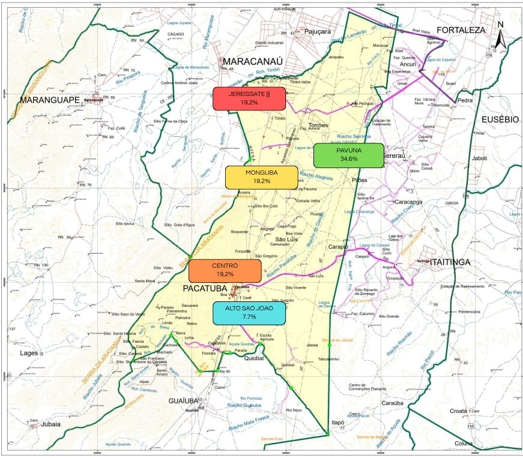

Mapa da fome em Pacatuba
Abaixo apresentamos um panorama visual com pontos de apoio e instituições de caridade que ajudam famílias em situação de vulnerabilidade. Esses locais oferecem alimentos, orientação e apoio social.

Abaixo apresentamos um panorama visual com pontos de apoio e instituições de caridade que ajudam famílias em situação de vulnerabilidade. Esses locais oferecem alimentos, orientação e apoio social.
